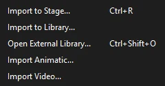

Animation
Video
Bring in footage or an animatic to animate over, and turn your animation into video files. Phoenix reads and writes video with the copy of ffmpeg that comes with it, so nothing else needs to be installed.
Import reference video
Use reference video to trace live action, match a performance, or time your animation to an animatic.

- Open the timeline you want the video on: the scene, or a symbol you are editing.
- Choose and pick the video file.
- Choose the options, then click OK. A progress bar follows ffmpeg through the video; Cancel stops it and adds nothing.
- Shrink to the stage width
- On by default. A video wider than the stage is scaled down to the stage's width, keeping its shape, so the frames are lighter to store and draw. A smaller video is never scaled up. Turn it off to keep the video's full size.
- Import its sound, as a stream
- On by default. The video's sound comes in as a library sound named after the video, set to Stream on the layer's first keyframe, so it plays in step as you scrub and play. A video with no sound simply brings none.
What you get
- A new layer at the bottom of the timeline, named after the video. It is a guide layer and starts locked, so you can't move or select the footage by accident while you draw above it.
- One keyframe per frame of the document, each showing a still of the video at that moment. Phoenix samples the video at the document's frame rate, so a 30 fps video in a 24 fps document comes in as 24 stills a second, and the timing matches.
- The stills, as JPEG bitmaps, in a library folder named after the video with frames on the end.
- The sound, if you asked for it.
Because it is a guide layer, the video shows while you work but is never exported or published. The whole import is one step to undo.
Working with the reference
- Hide the layer to see your drawing alone, and show it again to compare. Remember that sounds on hidden layers are silent, so hiding the video layer silences its sound too.
- Unlock the layer to move or scale a still, for example to line footage up with your stage. Each keyframe holds its own still, so a change to one leaves the others where they were.
- Use on the sound to slip part of the track; see Split Audio.
- When you are done with it, delete the layer, then the library folder of stills, to keep the file small. A long video at full size adds a lot of pictures to the document.
Video formats
Import Video lists MP4, MOV, M4V, AVI, MKV, WebM, FLV, WMV, MPG and MPEG files. Anything ffmpeg can decode in those containers works. If a file can't be read, Phoenix shows the message ffmpeg gave.
For an animatic cut as an edit list rather than one video, see Start from the animatic.
Video in FLA files
An FLA file made elsewhere may hold video items of its own, embedded in the file or linked to a video beside it, placed on the stage. Phoenix keeps them and their placements as they are, and saves them back unchanged, so the file still works in the app that made it. It does not play them:
- The library lists each video item. Double-click one to see whether it is embedded or linked, its size in pixels, its frame rate and the file it was imported from.
- On the stage, each placement draws as a dark frame with film-strip holes down its sides and the video's name in the middle, at the size the video was placed.
- HTML5 pages leave placed videos out.
To animate over such footage, get the original video file and bring it in with Import Video.
Make video files
(Ctrl+Alt+Shift+S) renders your animation to video, with the soundtrack mixed in:
- H.264 (MP4), to watch and share. Name the file
.movfor a QuickTime movie with the same video inside. - ProRes 422 HQ (MOV), for editing.
- ProRes 4444 with alpha (MOV), which can keep a transparent background, for compositing.
A PNG sequence, an animated GIF or a set of compositing passes come from the same dialog, and the render queue and the command line make videos in the background. See Export Movie for every option.
Phoenix makes MP4 and MOV files only. There is no FLV, AVI, WebM or WMV export; to get one of those, convert the MP4 or a PNG sequence with a video tool.
About ffmpeg
Phoenix always uses its own copy of ffmpeg, installed beside Phoenix itself, never another one on the machine, so imports and exports come out the same everywhere. If that copy is missing, Import Video and video export say so and name the folder it belongs in; reinstalling Phoenix puts it back. See About ffmpeg for its license.